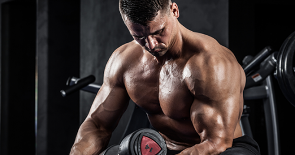

Ztrácíte se v ohromném množství posilovacích cviků? Začněte jednoduše. Není nutno střídat desítky složitých cviků, k úspěchu stačí jen několik základních, ale účinných cviků, na které nedají dopustit ani zkušení návštěvníci posiloven.
Následující cviky posílí a zpevní všechny partie těla tak, že se budete cítit nejen silnější, ale i atraktivnější.
Moderní posilování upřednostňuje cvičení s vlastní vahou. Bát se nemusíte ani posilovacích strojů a činek. Ideální je vyvážená kombinace. Trénink bude pestřejší a bude vás i více bavit.
Pro posílení celého těla potřebujete znát následující základní cviky, které jsou určeny buď na celé tělo nebo na vybrané partie. Dbejte na perfektní provedení každého cviku, ať už provádíte bicepsový zdvih, dřepy nebo bench press. Soustřeďte se na procvičovaný sval či svaly a vědomě je zapojte do cvičení.
| Obtížnost cviku | Opakování na sérii | Optimální počet | Celkový rozsah |
|---|---|---|---|
| pod 70 % | 3-6 | 24 | 18-30 |
| 70-80 % | 3-6 | 18 | 12-24 |
| 80-89 % | 2-4 | 15 | 10-20 |
| 90 % a více | 1-2 | 7 | 4-10 |
Základ každého dobrého posilovacího tréninku tvoří komplexní cviky, které jsou primárně zaměřeny na hlavní partie, ale při správném provedení zapojují celé tělo, a stimulují rozvoj svalové hmoty. Velký důraz přitom kladou na zpevněný střed těla neboli core.